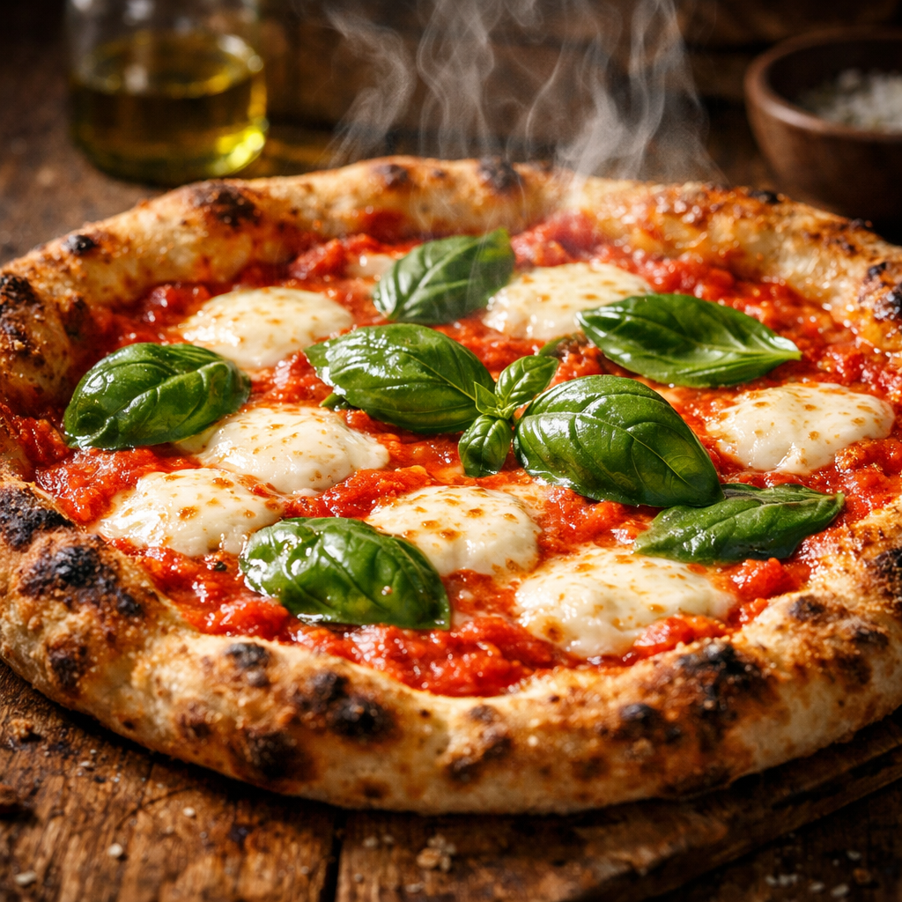

alt="Authentic Margherita Pizza with mozzarella and basil" style="width:100%; border-radius:10px; margin:20px 0;" />Margherita pizza is a classic Italian dish loved for its simplicity and rich flavor. Made with a thin crispy crust, fresh tomato sauce, creamy mozzarella, and aromatic basil, this pizza is perfect for any occasion. This easy homemade recipe allows you to recreate the authentic taste of Italy in your own kitchen without complicated steps.
Prepare the dough and let it rest until soft and elastic. Roll it into a thin base and spread tomato sauce evenly. Add slices of mozzarella and fresh basil leaves. Bake in a preheated oven at high temperature (around 220°C / 430°F) until the crust becomes golden and crispy. Remove from the oven, drizzle olive oil, and serve immediately.